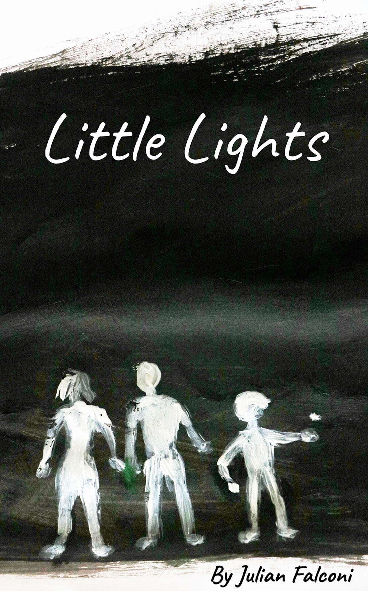

THE LOPEZ BROTHERS had rougher hands than most kids. The white of their fingernails was seldom unaccompanied by dirt, the stretches of skin between their knuckles were coated by small nicks, scabs, scars, and bruises, and, if they weren’t especially thorough with their scrubbing, their palms would smell of whatever kind of animal they handled last — although they were among few who could effectively distinguish between them. Today, their hands smelled of fish and tadpoles.
Page 3
Page 4